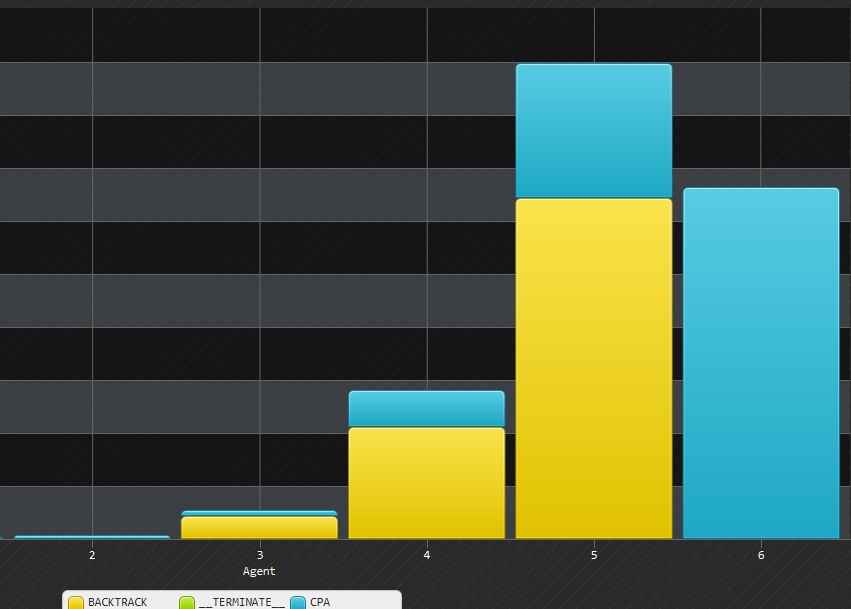

Total CC visualization will show the an histogram of the CC that was used during the algorithm the histogram is partitioned by agents and then by message where on each message the total number of CC that ware used during handling it is shown.